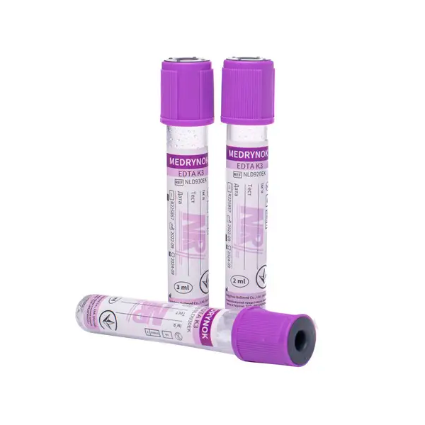
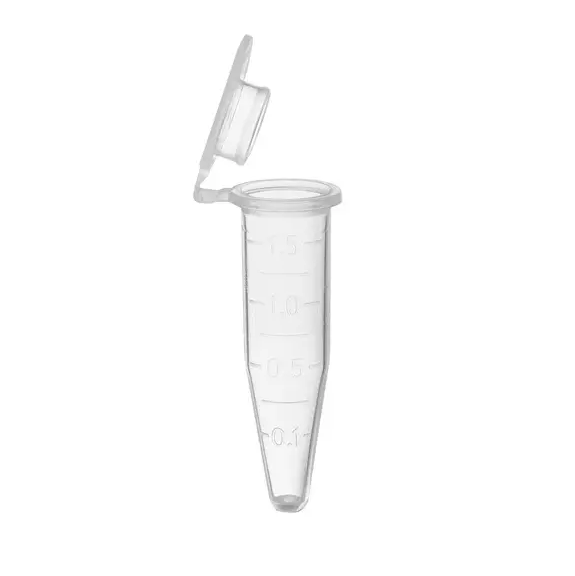
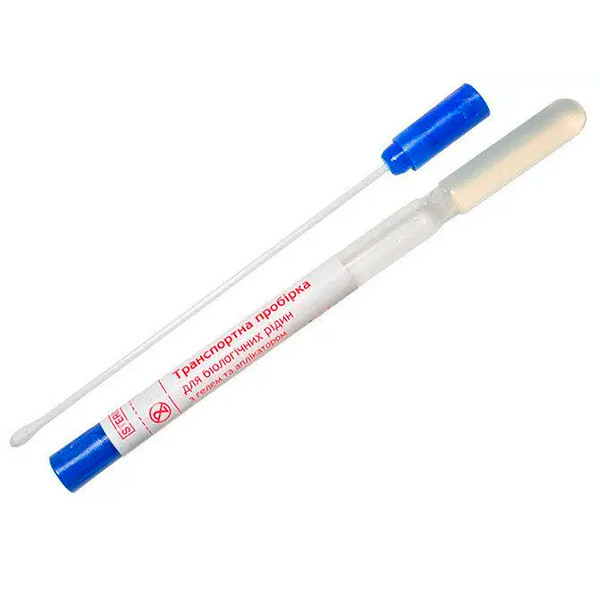
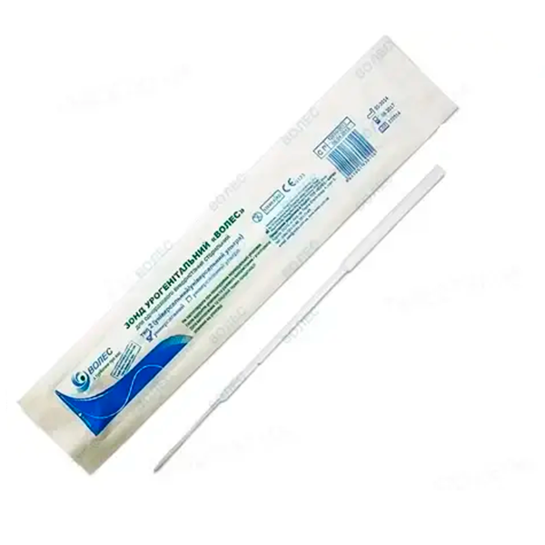

Організація лабораторних досліджень, а саме здачі діагностичних тестів складається з декількох етапів:
-
Підготовка
– визначиться з типом досліджень
– вибрати матеріал для діагностики (з огляду на клінічні ознаки, особливості захворювання і шлях збудника)
– підготуйте тварину до аналізу (див. Підготуйте тварини до аналізу)
– підготуйте витратні матеріали для відбору, зберігання та транспортування (див. Витратний матеріал)
    -
Збір матеріалу
– Згідно правил зробити відбір матеріалу для лабораторних досліджень (див. Правила збіру проб)
-
Оформлення
– маркування пробірок (вказати породу, ім'я тварини та прізвище власника на кожній пробірці, які відправляються в лабораторію) (див. Маркування проб)
– Заповніть направлення для дослідження
-
Доставка у лабораторію
Після того, як матеріал буде готовий до відправки в лабораторію, звяжіться з нами для доставки у лабораторію за телефоном (див. Контакти). Зразки доставляються в лабораторію в день відбіру або на наступний день "Новою поштою" за адресою:
Нова пошта №1, м.Чорноморськ, 0962986084, отримувач Зелена Ольга Валеріївна
-
Оплата
Реквізити на оплату після отримання матеріалу.